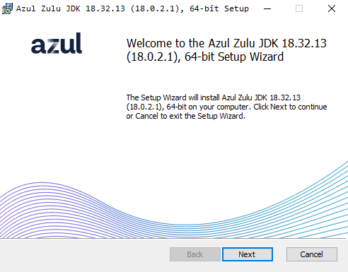
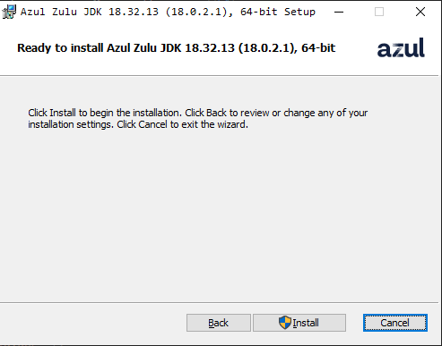
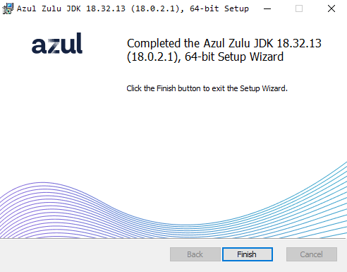
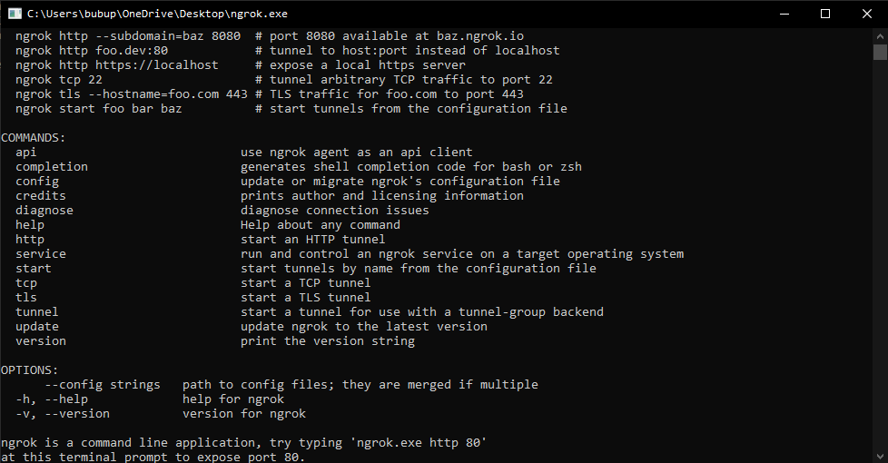
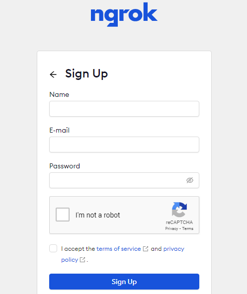
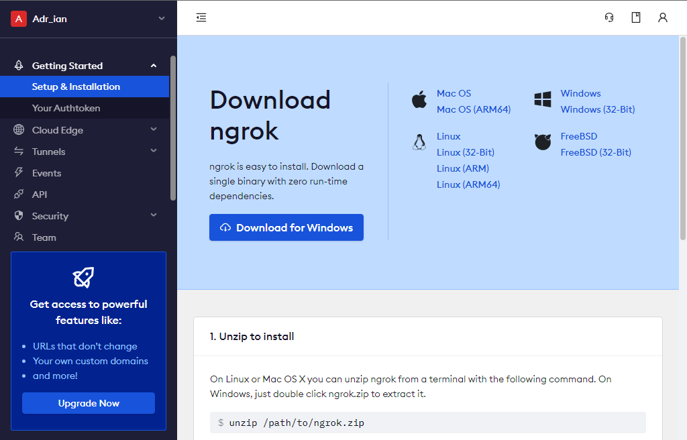
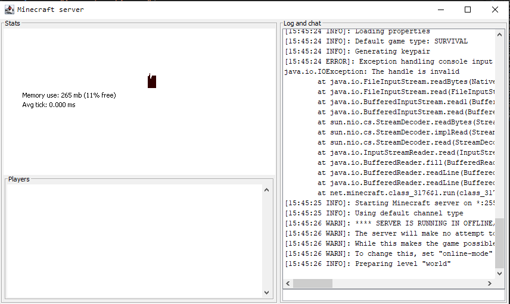

Setting this up should take at most 1 hour.
This tutorial will show you how to make your own Minecraft server. This is the easiest and safest way to host a server. Before we begin, make sure you are using Windows.
Click "Download Java" below. It will automatically download the Java version you need.
(File source: https://azul.com)
When the .msi file finishes installing, open it. After waiting for about 15 seconds, you should see this:
Click "Next".
On the next page, leave everything as it is, and click "Next" again.
Next page - This is what you should see.
Click "Install".
Wait for it to install. This should take up to 1 minute.
After it finishes, you will see this:
Java is installed. Now, we can move on to the other part.
Installing the Minecraft server.jar file & Installing ngrok
Ngrok is an app used for port forwarding. Not only, but we will use it only for this.
Click the "Download ngrok" button below. Ngrok will automatically start downloading.
File source: https://ngrok.com
Now, unzip the downloaded file.
Open the ngrok.exe file.
No installation required!
After opening ngrok, you should see this:
Before we continue, we need to create an account in ngrok. Don't worry - It's free!
Click the "Sign up" button below.
Pro tip: Right click the button > open in new tab.
You should see this:
Put your name, e-mail, and password. Do the verification, ckeck the "I accept......" box and click sign up!
Before you continue, check your e-mail. Ngrok sent you one, to verify your e-mail address.
You should now see this:
Expand the "Getting started" category, and select "Your authtoken".
You can also click the "Get authtoken" button below. It will take you to the authtoken page.
WARNING: DO NOT SHARE THE AUTHTOKEN WITH ANYONE, AS THEY WILL GET ACCESS TO YOUR ACCOUNT.
Once someone gets your authtoken, they are 1 command away from logging in to your account.
Once you're in the authtoken page, click the blue "copy" button next to your authtoken. Your authtoken is now copied to your clipboard. Now, get back to your ngrok app, and type this: ngrok authtoken [your-authtoken] For example: ngrok authtoken 4cyakrfhv48ytv9mydotv4v8myoiyfmoy3wyo That's not a real authtoken! Step 11
Your authtoken is now saved in your ngrok app. This is the last command you have to type in ngrok! In your ngrok app, type this command: ngrok tcp 25565 After that, you should see something similar to this: Please remember, that everytime you restart ngrok, you will have to type ngrok tcp 25565 again, and your IP will change. By the way, your IP will look something like this: Select the IP, and press ctrl+c on your keyboard to copy it. This is the IP you will give to your friends.
Installing the server.jar file.
Now, the last step - installing the server itself. Click the "Download server.jar" button below. It will download the server.jar file for you. Tip: We recommend going to this website and downloading the server.jar file from there, as it is always updated. Once you download the server.jar file, create a new folder in your desktop, and name it whatever you want, but we recommend naming it "MinecraftServer". Now, drag the server.jar file into the MinecraftServer folder, and double click it. Wait for about 30 seconds, and open the eula.txt file.
Inside of it, change "eula=false" to "eula=true".
Step 10
Step 12
Step 13
Step 14
Step 15
Step 16
After doing that, double click your server.jar file again.
If the server file isn't named exactly server.jar , rename it to "server.jar".
After waiting for about 15-30 seconds, you should see a window pop up. It's your Minecraft server!
You can now either close that window, or leave it open. It doesn't matter.
Finally, click the "download file" button below. It will download a file named "StartServer.bat".
We recommend using this file to start the server, as it makes the server lag less, but you can also start it by double clicking the server.jar file.
Once it downloads, drag that file into your MinecraftServer folder.
And that's it!
You now have a Minecraft server that you and your friends can join.